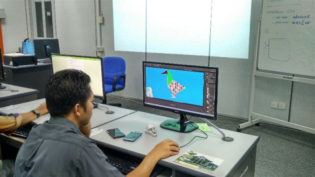
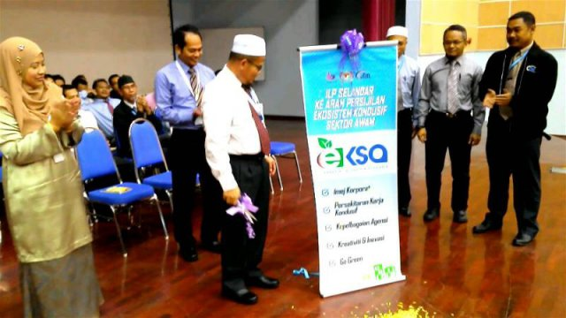

Halaman Utama
|  | Institut Latihan Perindustrian Selandar (ILPS) terus komited dalam mewujudkan persekitaran kerja yang kondusif bagi meningkatkan kualiti penyampaian perkhidmatan ILPS. Sejajar dengan itu, satu Majlis Pelancaran Ekosistem Kondusif Sektor Awam (EKSA) peringkat ILP Selandar telah diadakan semasa perhimpunan pagi di Dewan Besar. Pengarah ILPS, Tuan Hj. Ab. Rahman Bin Hj. Mohd Said telah sudi memotong reben sebagai gimik pelancaran EKSA yang disaksikan semua pengajar, kakitangan dan pelajar ILPS. Majlis kemudiannya disusuli dengan acara menanam pokok simbolik kepada amalan Go Green yang perlu diterapkan kepada seluruh warga ILPS bertujuan meningkatkan kecekapan penggunaan tenaga ke arah penjimatan sumber. |
Institut Latihan Perindustrian Selandar (ILPS) terus komited dalam mewujudkan persekitaran kerja yang kondusif bagi meningkatkan kualiti penyampaian perkhidmatan ILPS. Sejajar dengan itu, satu Majlis Pelancaran Ekosistem Kondusif Sektor Awam (EKSA) peringkat ILP Selandar telah diadakan semasa perhimpunan pagi di Dewan Besar. Pengarah ILPS, Tuan Hj. Ab. Rahman Bin Hj. Mohd Said telah sudi memotong reben sebagai gimik pelancaran EKSA yang disaksikan semua pengajar, kakitangan dan pelajar ILPS. Majlis kemudiannya disusuli dengan acara menanam pokok simbolik kepada amalan Go Green yang perlu diterapkan kepada seluruh warga ILPS bertujuan meningkatkan kecekapan penggunaan tenaga ke arah penjimatan sumber. |
 |
|
Nik Mohd Fairus Ismail